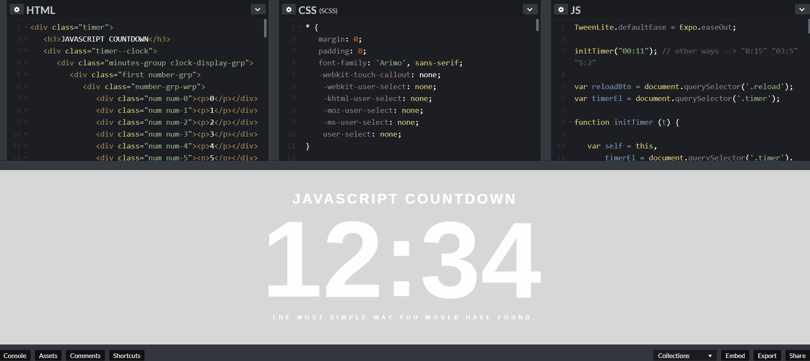

Intermediate & Advanced Tutorials
We’ve plenty of topics for intermediate and advanced HTML learners, too:
CSS tutorials
CCS, Cascading Style Sheets, allow you to design and ornament your web pages.This tutorial takes you from the beginning to being fluent in CSS so that you can create complex pages that are easily maintained.
JavaScript

Javascript is often used to add dynamic elements (like this countdown clock) to web pages.
JavaScript is arguably the most important web coding language after HTML. Most websites you visit employ at least a little bit of JavaScript coding.
Along with HTML and CSS, JavaScript makes the trinity of webpage design and construction.
This tutorial assumes you know nothing and gets you going with this essential programming language. It even introduces you to advanced subjects like AJAX and jQuery.
HTML5
Video: This 3 minute crash course is a great way to start understanding HTML5.
HTML5 has revolutionized webpage markup with things like semantic and multimedia elements. Find out all about the new goodies that are waiting to be explored.
Semantic Markup
This tutorial introduces you to semantic markup that allows you to construct pages so that their structure reveals their content.
This is especially useful as search engines become more and more advanced — allowing them to find users the right information they are looking for.
Logical tags
You may have noticed that few people use the i tag for italics and instead use the em tag.
This is because the i tag is just a formatting tag and thus should really be accomplished with CSS. The em has meaning: the text is emphasized.
Logical tags like em and cite are important in the same way as semantic markup. Find more in this brief discussion.
HTML Reference Guides
Meanwhile, our detailed HTML tags reference lets you find out more about every single HTML tag from <a> to <xmp>.
Each tag reference includes background and examples, which show how to use the tag in question. It’s perfect for when you want to troubleshoot problems while coding HTML.
Below are some of the most common tags — used by nearly every website you encounter:
Button Tag

Buttons can be customized in astonishing ways using CSS and JS. This is Codepen.io – an online editing and code sharing platform.
A tag that puts a button onto a webpage. It must be combined with JavaScript in order to do anything. This page provides all the details you need.
Anchor Tag
Links are far more powerful than new HTML coders realize. Find out all you need to know to make the greatest use of the a tag.
Link Tag
The link tag can be confusing because it is easy to mix up with “links” (defined with the a tag).
But link is a very powerful tag that allows you to link an HTML document to an outside resource like a CSS file. Find out all you need to know here.
Image Manipulation

This is an image code with various attributes.
Although HTML makes displaying images easy with the img tag, by using some JavaScript, you can change images on the fly.
This tutorial shows you how.
Character Codes
Another great aspect of HTML is its ability to use non-keyboard keys like ® (®) and © (©).
This reference provides you with the information you need to make full use of these symbols.
Headings
Headings are a way to make text stand out by breaking up the page.
Paragraph
Paragraphs determine line spacing.
Italics
Create italics text just like in a word processor.
Bold
Bold text emphasizes keywords.
Anchor
The anchor tag is most commonly used to create links in combination with the href attribute.
Unordered Lists
Unnumbered lists of bullet points use the Unordered List tag.
Blockquote
Blockquote tags are used to enclose quotations from people. This tag helps to differentiate the quote from the text around it.
Horizontal Rule
A horizontal rule is a straight line commonly used for dividing areas of a webpage.
Division
The Division tag defines specific layout styles within CSS.